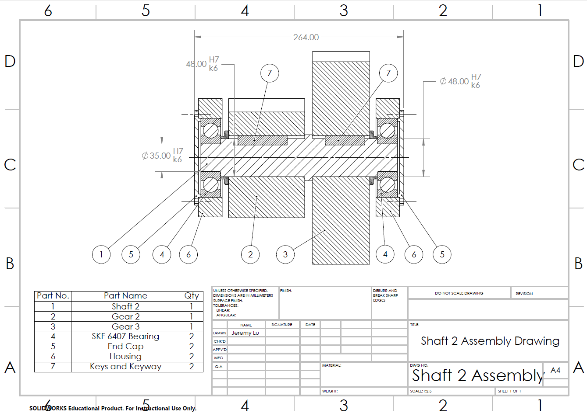
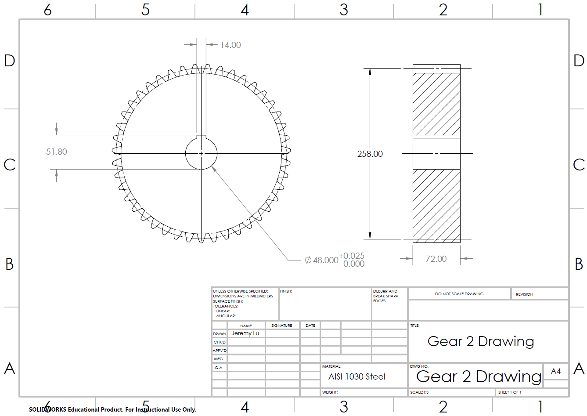
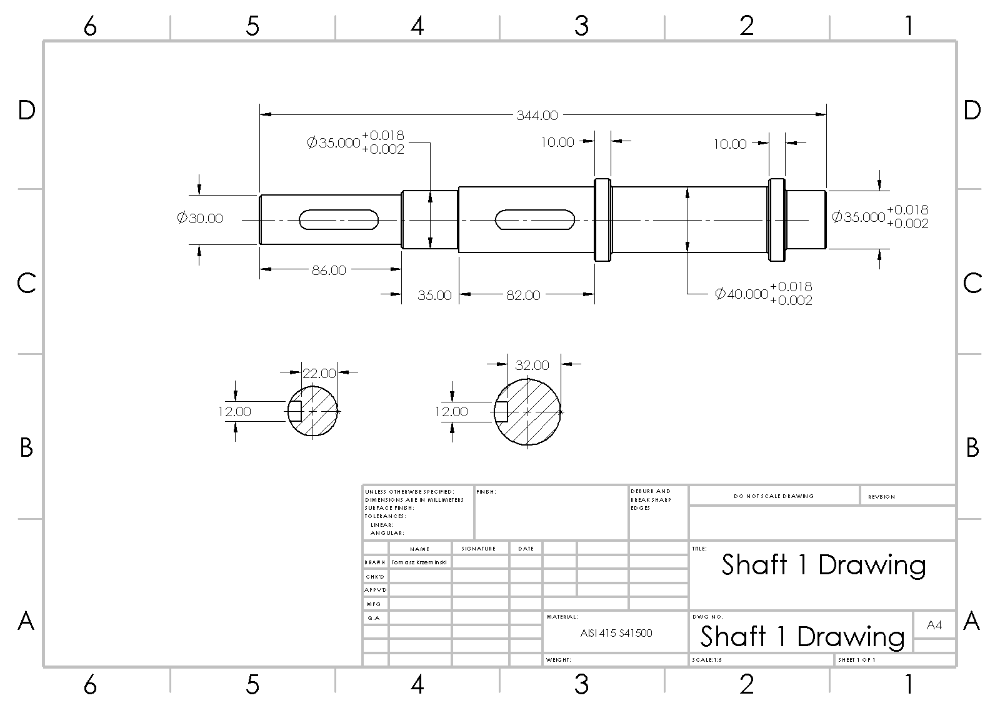
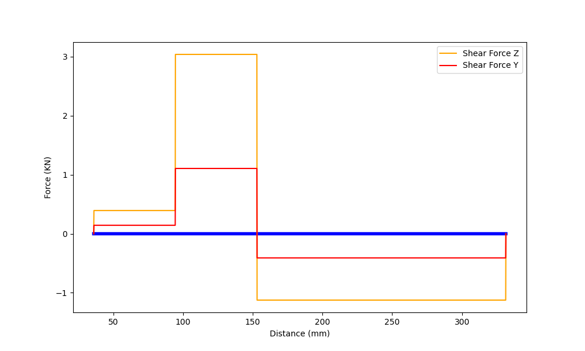
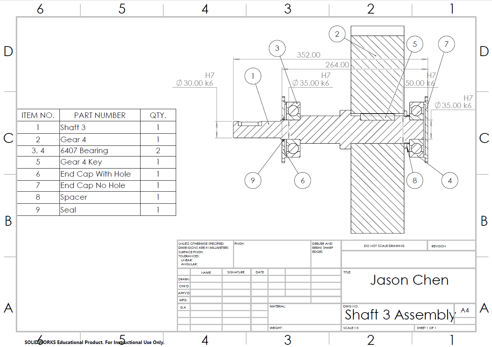

Two-Stage Reducer Gearbox Design using Python
Designing a 60 kW two-stage gearbox, including gears, shafts, bearings, fatigue analysis, and automated factor-of-safety calculations.
Status: Completed · Fall 2024 (ME 315)
Overview
This project designed a two-stage reducer gearbox capable of transmitting 60 kW while reducing an input speed of 2700 RPM to approximately 403 RPM. The design was sized to remain compact while satisfying gear, shaft, bearing, fatigue, and service-life requirements.
The final system uses four spur gears, three shafts, and six ball bearings. Python was used to automate calculations for shaft stresses, gear bending and contact stresses, bearing life, and component factors of safety.
Shaft 1 assembly with gears, bearings, housing, and retaining components.

Intermediate shaft assembly carrying the second and third gears.
Challenge
The gearbox had to achieve the required speed reduction while transmitting high torque and surviving at least five years of operation at 99% reliability. This required coordinating gear geometry, shaft sizing, bearing selection, packaging, and fatigue performance rather than optimizing any component independently.
The most limiting component in the final design was Gear 2 in bending, which set the overall gearbox factor of safety at 1.10.

Gear 2 was the limiting component in the final factor-of-safety evaluation.
Approach
The design began by selecting gear tooth counts and modules to meet the target reduction ratio. Gear forces were propagated through each shaft to determine bearing reactions, shear forces, bending moments, torque, and critical cross-sections.
Each shaft was checked using combined bending and torsional loading, fatigue strength corrections, the Goodman criterion, and yielding. Gear teeth were evaluated for bending and contact stress, while bearing selections were checked against the required operating life. The calculation workflow was implemented in Python so design changes could be evaluated consistently.

Detailed Shaft 1 drawing showing diameters, keyways, shoulders, and tolerances.

Shear-force analysis used to identify critical loading regions on Shaft 1.
Result
The final gearbox reduces 2700 RPM to 403.2 RPM while transmitting 60 kW. The selected shaft diameters are 40 mm, 48 mm, and 50 mm, with Goodman fatigue factors of safety of 1.45, 1.43, and 1.41 respectively.
All bearing locations satisfy the required five-year service life. The completed design includes detailed shaft, gear, and assembly drawings, with an overall minimum factor of safety of 1.10.

Final output-shaft assembly carrying the highest system torque.
Full Report
The GitHub repository contains the project code, while the full report documents the gear train, shaft sizing, bearing selection, detailed calculations, and engineering drawings.